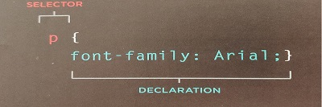
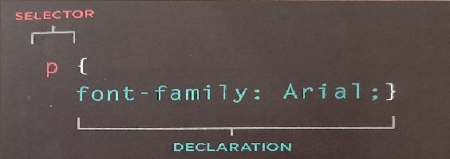

CSS-sidan
Grunden i CSS
CSS är ett språk vi använder för att utforma ett HTML -dokument.
CSS beskriver hur HTML -element ska visas.
CSS låter dig skapa regler som anger hur innehållet i ett element ska visas och den viktigaste att CSS sparar mycket arbete !
Reglerna består av sektorer (som specificerar de element som regeln gäller) och deklarationer (som anger hur dessa element ska se ut)
Olika typer av selektors gör att du kan rikta dina regler mot olika element.
Deklarationer består av två delar: egenskaperna för elementet som du vill ändra,värdena för dessa egenskaper.
CSS- regler vissas vanligtvis i ett separat dokument, även om de kan visas på HTML-sida.
En bild förklarar den CSS syntax:
Selektor pekar på HTML -elementet du vill formatera.
Deklarationsblocket innehåller en eller flera deklarationer separerade med semikolon.
Varje deklaration innehåller ett CSS -egendomsnamn och ett värde, separerat med ett kolon.
Link elementete:
Denna link användas i ett HTML-dokument för att berätta för webbläsäaren var CSS-filen ligger och kan användas för att uttforma sidan.
Det är ett tomt element, vilket betyder att det inte behöver en stängande tagg, och det ligger inuti elementet <head>.
Den bör använda tre attribut: herf,Type pch rel.
- herf: detta anger sökvägen till CSS-filen, som oftas placeras i en mapp som heter css eller style.
- type: detta attribut anger vilken typ av dokument som länkas till, värdet ska vara text/css.
- rel: detta anger förhållandet mellan HTML-sidan och filen som den är länkad till, värdet ska vara stylesheet när du länkar till css-filen.
En HTML-sida kan använa mer än ett css stylesheet.För att göra detta kan det skulle ha e link -element för varje CSS-fil du använder.